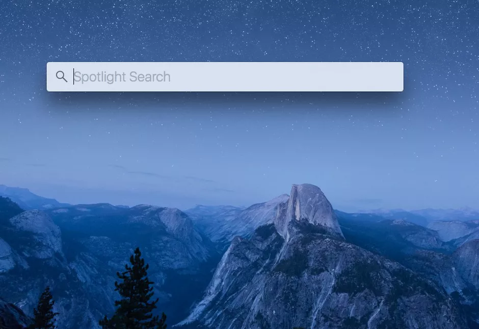

Using Terminal to get to your repositiory
Using the Command Prompt on Mac OS
Press command + Space at the same time for the search
type in terminal

Command Prompt keywords:
cd - call up directories.
ls -list directories
mkdir - make new directories
touch - create new file
code. - open the directory in VS code.